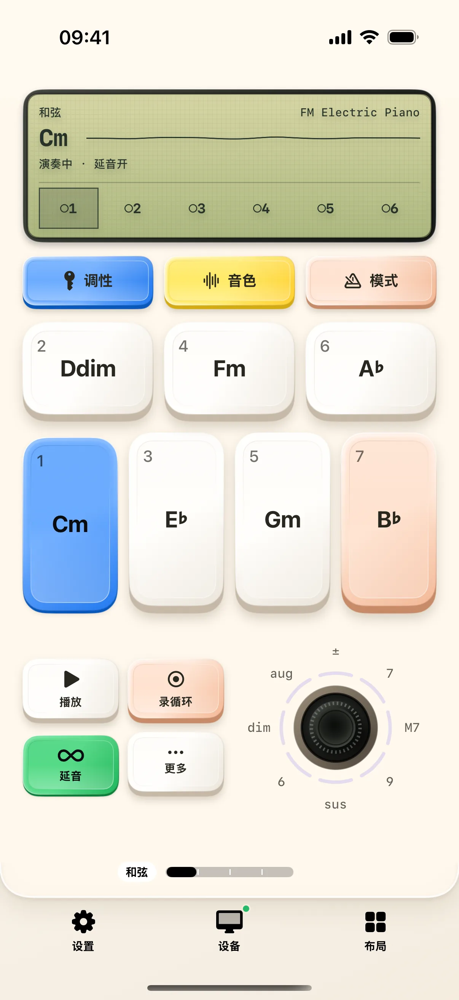
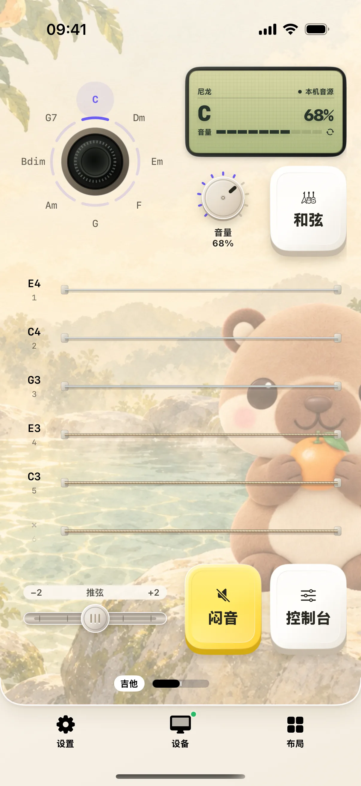
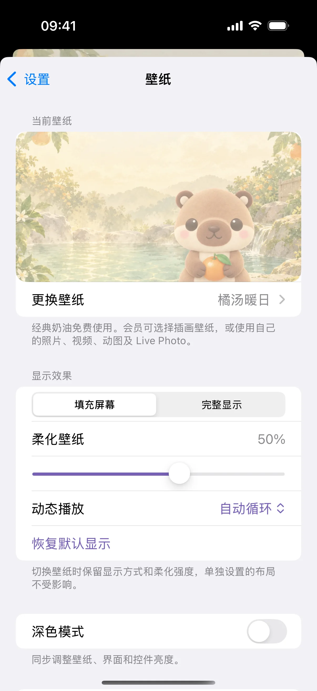

>w< 深度专栏与使用指南
文章专栏
17 套预设布局与实用教程，从连接 Mac、日常操作到合成器、吉他和动态壁纸，一步一步开始使用。

工作布局入门：用手机打字、复制与撤销
从工作桌面进入实时键盘，练习文本输入、撤销与重做，并找到编辑当前桌面的入口。
阅读全文 →
把常用回复做成按钮，点一下输入到 Mac
在奶猫妙控里新建文字按钮，填写常用回复，设置是否追加 Enter，并通过内容预览和 Mac 空白文档检查输入结果。

做一个“记录并保存”按钮：把文字和快捷键串起来
把文字按钮扩展成自动化，按顺序加入等待和 ⌘S，学习编辑步骤、预览内容、试运行与排查焦点问题。

用 SUMIFS 汇总项目中已付款的支出
下载五行练习数据，在奶猫妙控长按 SUMIFS，配置项目和付款状态两个条件，核对公式、复制结果并处理分号分隔符。

用 SUBSTITUTE 和 TRIM 清理商品名称
从带 SKU- 和多余空格的练习数据开始，用奶猫妙控生成 SUBSTITUTE 与 TRIM，分别检查删除文字、保留空字符串和指定替换次数。

把常用 Mac 软件放进启动器
从真实应用列表添加按钮，认识长按编辑与“更换 App”，并在 Mac 上核对启动结果。

用浏览器布局打开网址、切换标签页
演示网址输入面板、标签页操作和“切换后动作”，区分默认浏览器与指定 App。

财务布局入门：计算金额，生成表格公式
从本地计算器到公式参数面板，填写范围、核对生成文本，并区分复制与发送。

先在手机上口述，再把文字输入到 Mac
切到文本模式，在手机上听写、修改错别字，再用上屏按钮输入到 Mac。了解文本模式与实时模式的区别。

在手机上查看并控制 Mac 桌面
完成局域网配对后，用手机移动 Mac 光标、查看画面，并按场景选择文本草稿或实时输入。

从一颗按键开始，定制你的 Mac 副控
从工作布局进入编辑器，添加按键、绑定操作、调整尺寸与外观，再连接 Mac 试用，逐步做出适合自己的桌面。

用氛围编程布局切换 Codex 任务
认识任务键的单击与双击，打开实时键盘，并核对当前任务的模型、推理强度和额度。

用终端布局新建、切换和管理会话
从终端桌面操作会话标签、命名与全屏键盘，用只读命令检查真实 Mac shell。

为剪藏补上笔记和出处，日后更容易找回
手动建立一条带笔记和来源链接的剪藏，保存后检查出处，再用笔记关键词找回内容，适合阅读摘录和资料复盘。

筛选本周的剪藏，把选中的资料导出到文件
用关键词和链接类型筛选剪藏，跨筛选选择两条资料，再通过 iOS 分享面板导出文字与附件，完成一次可检查的资料整理。

用写作布局移动光标、查找和整理格式
用一份短文练习字词句段范围、文内查找和格式页，按编辑器实际能力核对结果。

调研布局入门：保存摘录和自己的笔记
从当前选中文字到手机剪藏夹，演示添加原文、补充笔记、保存和查看详情。

用阅读布局翻页、找章节和跳转页码
以 Mac 上的 PDF 为例，逐步打开章节目录、筛选章节和页码跳转面板。

应用创作台入门：从 Blender 的选择与视角操作开始
先确认前台软件与控制名称，再用 Blender 默认键位做选择、模式和视角练习。

演示布局入门：设置浮窗，练习翻页与计时
长按进入摄像头与投屏设置，再到演讲计时桌面开始计时、打点和暂停。

用手机辅助剪辑：从浏览时间线到分割与撤销
在应用创作台确认剪辑软件，用练习项目尝试逐帧浏览、播放暂停、分割与撤销，了解不同工作区的操作方式。

用手机辅助演讲：翻页、设置浮窗与分段计时
在演示布局练习翻页，设置摄像头与手机投屏浮窗，再用演讲计时器记录每一部分的用时。

合成器入门：弹出和弦，再给它加一段鼓点
从七级和弦键开始，练习延音、打开详细编辑、生成鼓点变体与播放停止，认识合成器的四个桌面。

吉他入门：扫响六根弦，跟着提示练一段和弦
认识吉他桌面的琴弦、和弦与控制台，再进入学习桌面选曲、听示范和逐步跟练。

用媒体布局控制播放与歌曲进度
认识点击轮、MENU、播放模式与进度页，按 Mac 播放器实际支持的能力操作。

采样布局入门：载入声音，试听并调整鼓垫
从声音库开始，认识鼓垫与采样菜单，再打开声音编辑页检查音量、衔接和细调。

街机布局入门：进入大厅，连接手机手柄
说明 Mac 游戏大厅、手机玩家编号与 LED 菜单的使用流程，区分街机手柄与系统虚拟手柄。

用智能家居布局连接 Home Assistant，控制一盏灯
从地址与令牌到设备组件，逐步绑定一盏灯，再区分按钮反馈和设备真实状态。

换一张会动的壁纸：从内置动物到自己的视频
在主题与壁纸中搜索动物、应用动态壁纸，调整显示方式，并了解多选导入、保存与布局单独设置。

第一次连接 Mac：配对、权限设置与常见问题
了解辅助功能、屏幕录制和本地网络的用途，按步骤检查 Mac 授权，并排查配对超时、按键无响应与黑屏。